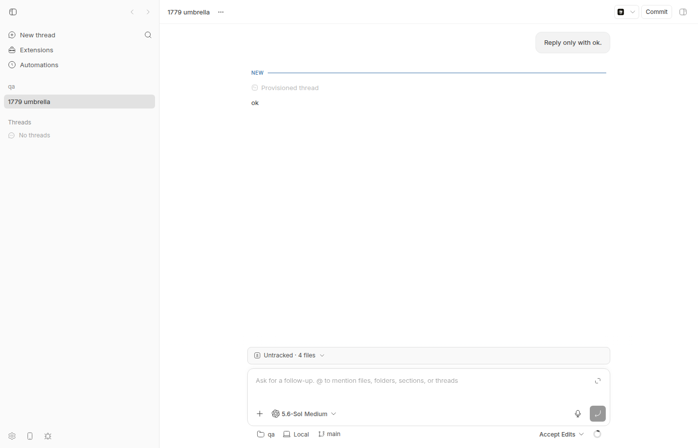

#1779 · Recursive workspace watch can OOM the host for a large environment root
Verdict: REPRODUCED · Root-cause confidence: high
1. TL;DR
When any UI surface that needs an environment's details (the thread page is enough) is open, the server tells the host daemon to watch that environment's workspace directory recursively. The daemon's watcher child (@parcel/watcher) walks the entire tree and puts one inotify watch on every directory. The only things it skips are the workspace's own top-level .git and the top-level directories that the workspace's own git status --ignored reports. Nothing skips nested node_modules, .git, caches, or the contents of untracked nested checkouts, and a root that is not a git repo gets no ignore list at all. For an "umbrella" directory that contains many repos, that is every directory on disk: on the reporter's machine ~1M watches and tens of GB RSS, which the kernel OOM-kills; the daemon then respawns the child and replays exactly the same subscription, so it loops. I reproduced this end to end on a dev instance with a synthetic 20,084-directory umbrella root: opening the thread page took the watcher child from 1 to 20,077 inotify watches, closing the page dropped it back to 1, and SIGKILLing the child brought a new child back to 20,077. A two-line change to the ignore list (recursive globs **/node_modules, **/.git) takes the same tree from 20,070 watches to 6.
2. Claims vs findings
| Claim from the issue | Status | Evidence |
|---|---|---|
Opening a surface that subscribes to environment-detail (not merely creating the env, not thread-detail) is what triggers the recursive workspace watch. | Verified | WatchInterestCoordinator.resolveTarget maps environment-detail + status==="ready" + path to a workspaceTarget; thread-detail only yields a thread-storage target (watch-interests.ts L372-395). Live: creating the env + thread via CLI left the child at 1 watch; opening the thread page in a browser went to 20,077 (repro step 5). |
The daemon applies the set via replaceAuthoritativeWatchSet → watchWorkspace; the child calls subscribe(dir, cb, opts) with opts unchanged. | Verified | parcel-child-handler.ts L62-80 passes message.opts straight to parcel. |
Workspace-root ignore = hardcoded .git (a path, not a glob) + !! dir/ entries from git status --porcelain=v1 -z --ignored=matching --untracked-files=normal (5s/10MB), fallback [".git"]; no options at all for a non-git root. | Verified | L33-35, L58-118, non-git branch L221-229, fallback L263-278. Repro test captured the exact ignore passed for the umbrella root: [".git"]. |
The git-internal ignore list (hooks/info/logs/modules/objects/worktrees) is only for the separate git-dir watch. | Verified | createCommonDirWatchOptions in watch-specs.ts L86-90; used only by resolveMetadataWatchSpecs. |
parcel path ignores are path.resolve(watchRoot, value), so they never match nested node_modules/.git. | Verified | @parcel/watcher@2.5.6 wrapper.js normalizeOptions: non-glob entries become ignorePaths.push(path.resolve(dir, value)); glob entries become picomatch regexes. Measured: ignore [".git"] → 20,070 watches; ["**/.git","**/node_modules"] → 6 on the same tree. |
For an umbrella parent, git status --untracked-files=normal does not recurse into untracked nested checkouts, so their trees are fully watched. | Verified | On the synthetic root git status prints only ?? apps/ (untracked, not ignored) — there are no !! directory records, so the ignore list collapses to [".git"]. See build-umbrella-output.txt. |
File listing already skips node_modules and dot-directories, plus target/vendor/dist/build/out/venv/__pycache__. | Partially verified | listPathsRecursively skips dot-prefixed names, node_modules and symlinks (file-list.ts L137-146). I found no target/vendor/dist/build/out/venv skip list anywhere in the daemon; that part of the claim is not accurate for this commit. |
| No directory-count/depth/inotify budget; a doomed watch set is re-pushed on every child session. | Verified | No cap anywhere in packages/host-watcher. ParcelWatcherProxy keeps the subscription registry as source of truth and replaySubscriptions on every child ready (proxy L254-259). Live: SIGKILL of child 2661925 (20,077 watches) → respawned child 2697506 re-registered 20,077 watches within 8 s (evidence). |
| ~1.2M directories → ~1,004,390 watches, ~30 GB RSS + 25 GB swap, OOM loop. | Unverified at that scale | I did not build a 1.2M-directory tree (it would endanger the shared machine). The mechanism scales linearly: 20,084 dirs → 20,077 watches here, so 1.2M dirs → ~1.2M requested watches (capped by max_user_watches). RSS growth at 1M+ entries is plausible (parcel keeps a full DirTree of every file and directory in the child) but I did not measure it. |
3. Environment
- bb commit
c7c66423d55c320bab9103218f0ffef1a8191331(main, 2026-08-20); no later commit onorigin/maintouchespackages/host-watcherorapps/server/src/ws/watch-interests.ts(checked withgit fetch origin main; git log c7c66423d..origin/main→ empty). - Ubuntu 26.04, Linux 7.0.0-29-generic, x86_64, 16 CPU, 57 GB RAM; node v24.18.0; git 2.53.0;
@parcel/watcher2.5.6;fs.inotify.max_user_watches=476690on this machine. - Dev instance from this worktree: App
http://localhost:14266, Serverhttp://localhost:22266, Host daemon127.0.0.1:30266, data dir~/.bb-dev/projects-bb-.claude-worktrees-wf_926b3193-f6c-3-1db1db4283a2(deleted at cleanup). Provider for the one real turn: codex (codex-cli 0.148.0).
4. Minimal reproduction
A. Unit-level (no running bb): 30 seconds
- Copy
umbrella-workspace-watch-1779.test.tsintopackages/host-watcher/test/and run, frompackages/host-watcher:pnpm exec vitest run test/umbrella-workspace-watch-1779.test.ts
The test builds a tiny umbrella repo (git root, 4 untracked nested git repos, each with 300node_modules/pkg-N/libdirs = 2,400 nested dirs), drives the realwatchWorkspaceStatus()with the real parcel watcher, and countsinotify wd:lines in/proc/self/fdinfo.expected: the daemon's workspace-root subscribe skips nested node_modules/.git → a handful of watches actual (main): { "workspaceRootIgnore": [ ".git" ], "nestedDirCount": 2400, "inotifyWatchesAdded": 2486, ... } × #1779 umbrella workspace watch > watches every nested node_modules/.git directory because the ignore list only covers the root level → expected 2486 to be less than 2400 ✓ control: a recursive glob ignore keeps the same tree cheap (6 watches with ignore ["**/.git","**/node_modules"])Full output:vitest-output.txt. The failing assertion isexpect(watches).toBeLessThan(nestedDirCount): bb adds one watch per nested directory.
B. End to end on a dev instance (what the reporter saw)
- Build a synthetic umbrella root (20,084 directories, ~3 s):
build-umbrella.sh/tmp/bb-reports/issues/1779/repro/build-umbrella.sh /tmp/bb-1779-umbrella-live 4 2500 dirs under root: 20084 root-level git status ignored entries (what bb's ignore discovery sees): ?? apps/
- Start a dev instance from the worktree (
scripts/bb-dev-app current), create a project (POST /api/v1/projectswith a scratch repo), and create an unmanaged environment on the umbrella root by spawning a thread there:node packages/scripts/dist/commands/run-cli.js thread spawn --project proj_8nynkqsu6k \ --environment /tmp/bb-1779-umbrella-live --provider codex --permission-mode accept-edits \ --title "1779 umbrella" --prompt "Reply only with ok." --json # → thread thr_fy5k6a4tzp, environment env_b7js8uew87 (status ready)
- Measure the watcher child before any UI is open (
watcher-child-stats.shgreps your daemon'sparcel-child-entry.ts/bb-parcel-watcher-child.mjsprocess and counts inotify watches in/proc/<pid>/fdinfo):$ watcher-child-stats.sh wf_926b3193-f6c-3 pid=2661925 inotify_watches=1 rss_mb=86
Creating the environment and running a turn did not start the workspace watch (thread-detail interest only). - Open the thread page in a browser (
http://localhost:14266/projects/proj_8nynkqsu6k/threads/thr_fy5k6a4tzp). The thread view callsuseEnvironment/useEnvironmentWorkStatus, which subscribe toenvironment-detail.
The trigger: the thread page for the environment rooted at /tmp/bb-1779-umbrella-live. Nothing looks wrong in the UI; the damage is in the host daemon's watcher child. - Measure again:
expected: a few watches (root, apps/, apps/child-N, .git metadata) actual: pid=2661925 inotify_watches=20077 rss_mb=96
Every one of the 20,000 nestednode_modules/pkg-N[/lib]directories and every nested.gitsubdirectory got a watch. - Respawn re-applies the same set: SIGKILL the child while the page stays open.
$ kill -9 2661925 # 14:18:23 $ sleep 8; watcher-child-stats.sh wf_926b3193-f6c-3 pid=2697506 inotify_watches=20077 rss_mb=86
- Close the browser page (drops the interest):
inotify_watches=1(child-stats-after-close.txt). Matches the reporter's "dropping that environment-detail interest dropped the child to ~1,168 watches". - Isolate the ignore semantics with parcel alone (
count-watches.mjs, run frompackages/host-watcher):ignore [".git"] (what bb passes for an umbrella git root) → inotifyWatches 20070, subscribe 254 ms ignore (none) (what bb passes for a non-git root) → inotifyWatches 20084, subscribe 255 ms ignore ["**/.git","**/node_modules"] → inotifyWatches 6, subscribe 3 ms
Repro files: 1779/repro/
5. Root cause
Mechanism. The workspace-root subscription's ignore list is built only from the workspace's own top-level git-ignored directories:
// packages/host-watcher/src/workspace-status-watcher.ts
const WORKSPACE_ROOT_ALWAYS_IGNORED_PATHS = [".git"]; // L33
...
function collectIgnoredDirectoryPaths(statusOutput) { // L89-102: only "!! dir/" records
function mergeWorkspaceRootIgnores(gitIgnoredPaths) { // L104-113: [".git", ...gitIgnored]
async function createWorkspaceRootWatchSpec(args) { // L130-140
return { kind: "workspace-root", options: { ignore: await resolveWorkspaceRootIgnores(args.cwd) }, rootPath };
}
...
if (!(await pathExists(path.join(this.args.cwd, ".git")))) { // L221-229: non-git root
this.startWatchSubscription({ kind: "workspace-root", rootPath }); // → no options at all
}
(permalink L33-140, L216-233.) Every entry is a plain path, and @parcel/watcher's wrapper turns plain paths into path.resolve(dir, value) and only glob-looking entries into recursive picomatch rules. So .git means exactly <root>/.git. git status --untracked-files=normal --ignored=matching on an umbrella root reports nested checkouts as a single untracked entry (?? apps/) and never reports the !! ignored directories inside them, so nested node_modules, nested .git, caches, build outputs etc. are crawled and watched. Parcel's subscribe does a full FTS crawl of everything not ignored, adds one inotify watch per directory, and keeps a DirTree entry for every file and directory in the child process — that is the inotify count and the RSS.
Why it loops. ParcelWatcherProxy treats its subscription registry as authoritative and replays every subscription verbatim whenever a child exits, misses pings, or reports a backend error (proxy L230-259). When the kernel OOM-kills the child, the replacement re-crawls the same root with the same options. There is no size/inotify budget anywhere between the server's watch set and the child's subscribe call, and the server only removes the target when the UI interest goes away.
Deeper issue. The ignore design (PR #105, "Reduce workspace watcher inotify usage") assumed the workspace root is a single repository whose .gitignore describes its heavy directories. Unmanaged environments can point at any directory — umbrella parents, home directories, monorepos with nested untracked clones, or non-git folders — and the design has no floor for those cases. A secondary problem: if the inotify cap is hit mid-crawl, parcel's subscribe fails, the child reports subscribe-failed, and the proxy maps that to a recoverable rescan error (L282-290), so RootSubscription re-subscribes with backoff (cap 30 s) and re-crawls the whole tree forever.
6. Proposed fix (first principles)
Layer 1 (confident, small): add a default set of recursive glob ignores to every workspace-root subscribe in workspace-status-watcher.ts, independent of git discovery: **/node_modules, **/.git (nested repos), **/.cache, **/__pycache__ (and whatever other well-known heavy names the team agrees on). Parcel picomatch-matches globs against the root-relative path and FTS-skips matching directories during the crawl, which is why **/node_modules costs nothing. Apply it in mergeWorkspaceRootIgnores, in the git-status-failed fallback, and in the non-git branch. For the non-git branch keep <root>/.git watchable so the git init promotion (repositoryCreated, which checks ignore.includes(".git")) still fires — use */**/.git there. I prototyped exactly this (prototype-fix.diff): the repro test goes from 2,486 watches to 10 and passes (output). Three existing tests in watch-status.test.ts then fail only on exact-array assertions of the ignore list (toEqual([".git", ".turbo", "coverage"]), toEqual([".git"]), toBeUndefined()) and need updating; the git-init promotion test should be re-verified after that update. What could go wrong: a workspace that legitimately tracks files inside a nested node_modules (rare; PR #105 explicitly avoided pruning dirs containing tracked files) would stop producing content-change events for them; since the watch only drives "something changed, re-read status" this is acceptable, but worth a note in the PR.
Layer 2 (recommended): a budget. Before/while crawling, bound the work — e.g. the child counts directories during subscribe (or a cheap pre-walk with the same ignores, capped at N directories) and fails the workspace subscription with a distinct, terminal watch-error when it exceeds a limit (order 100k dirs) or when inotify_add_watch returns ENOSPC. The proxy must not map that to a recoverable rescan (which re-crawls forever) and must not replay it on respawn; the daemon should surface it to the server so the UI can show "live updates disabled for this workspace, too large". Layer 3 (optional UX): warn when attaching an unmanaged environment whose root is an umbrella/huge directory.
Wire note: none of the layer-1 change touches server↔daemon messages, so no HOST_DAEMON_PROTOCOL_VERSION bump; layer 2's new error kind probably does.
7. PR review
No open PRs are linked to this issue.
8. Related issues
- #1660 — bb host process grew to 77 GB RSS and froze the machine (open; different trigger, same "host daemon eats the machine" family; worth checking whether a big unmanaged root was involved).
- #1505 — host daemon crashed on EPIPE from the watcher child ping (closed; the ping/respawn machinery that re-applies the doomed set here).
- #1873 — native addon load order crash (closed; why the in-process parcel import is structured the way it is).
- PR #105 — introduced the git-status-derived ignore list this issue is about.
9. Appendix
Watcher child measurements
before opening UI: pid=2661925 inotify_watches=1 rss_mb=86 after opening thread page: pid=2661925 inotify_watches=20077 rss_mb=96 after navigating to /settings (thread pane stays mounted): inotify_watches=20077 after closing the page: pid=2661925 inotify_watches=1 rss_mb=95 reopen page, SIGKILL child: pid=2697506 inotify_watches=20077 rss_mb=86 (respawned, same set)
Commands run
gh issue view 1779 --repo get-bb/bb --json ...
pnpm install --frozen-lockfile --prefer-offline; pnpm exec turbo run build
git fetch origin main; git log c7c66423d..origin/main -- packages/host-watcher apps/server/src/ws/watch-interests.ts apps/host-daemon # empty
cd packages/host-watcher && pnpm exec vitest run test/umbrella-workspace-watch-1779.test.ts
/tmp/bb-reports/issues/1779/repro/build-umbrella.sh /tmp/bb-1779-umbrella-live 4 2500
scripts/bb-dev-app current
curl -s -X POST http://localhost:22266/api/v1/projects -H 'content-type: application/json' -d '{"name":"qa","source":{"type":"local_path","path":"/tmp/bb-1779-scratch","hostId":"host_5dsxjekybe"}}'
node packages/scripts/dist/commands/run-cli.js thread spawn --project proj_8nynkqsu6k --environment /tmp/bb-1779-umbrella-live --provider codex --permission-mode accept-edits --title "1779 umbrella" --prompt "Reply only with ok." --json
/tmp/bb-reports/issues/1779/repro/watcher-child-stats.sh wf_926b3193-f6c-3
doobie --headless -e '... goto thread page ... screenshot ...'
kill -9 <child pid>
cd packages/host-watcher && node /tmp/bb-1779-count-watches.mjs /tmp/bb-1779-umbrella-live [.git | '' | '**/.git,**/node_modules']
git diff packages/host-watcher/src/workspace-status-watcher.ts > prototype-fix.diff; pnpm exec vitest run; git checkout packages/host-watcher/src/workspace-status-watcher.ts
Files
umbrella-workspace-watch-1779.test.ts— failing-on-main vitest repro + passing controlvitest-output.txt,vitest-repro-with-prototype-fix.txt,vitest-with-prototype-fix.txt(full suite with prototype: 3 assertion-only failures)build-umbrella.sh,outputwatcher-child-stats.sh,before,after open,after navigate away,after close,respawncount-watches.mjs,outputprototype-fix.diff- assets/1779-00-home.png (dev app before opening the thread), assets/1779-01-thread-open.png
{kind=link}
{kind=link}